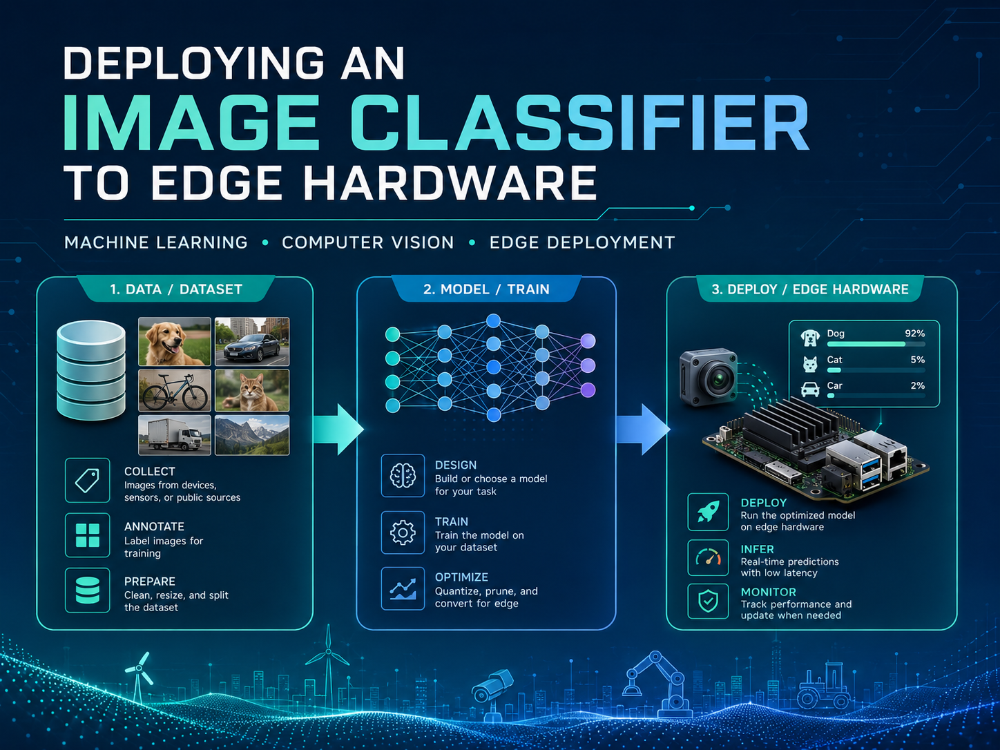
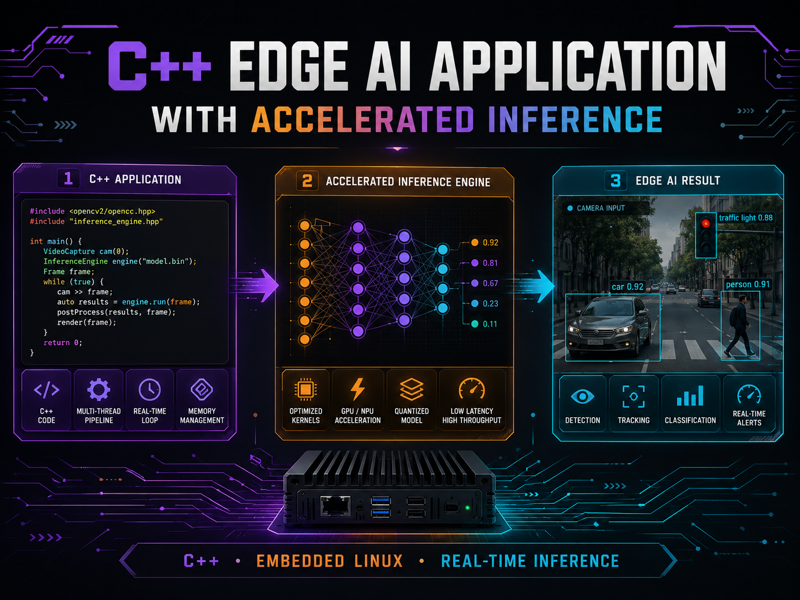
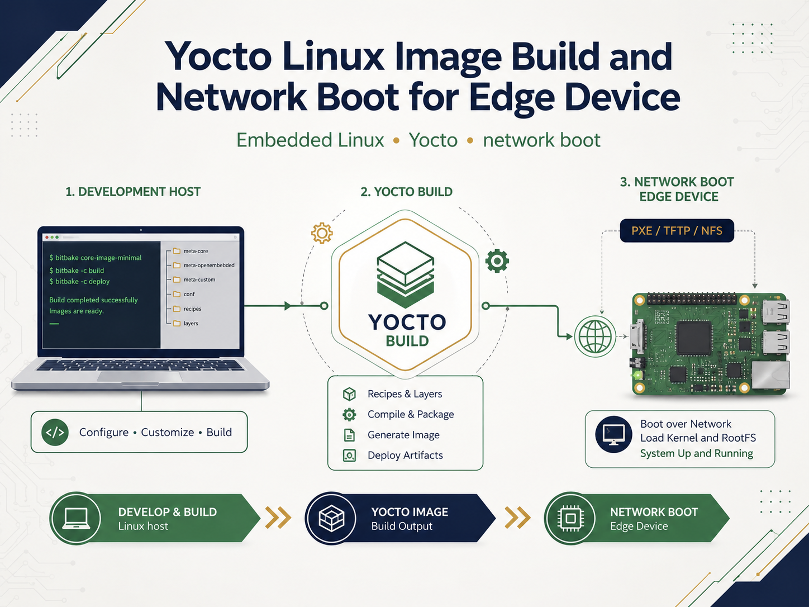

Generative AI and LLM Applications
Build GenAI tools such as internal assistants, customer-support apps, content workflows, document Q&A systems, and business-facing LLM utilities.
AI systems for real-world operations, built with engineering depth.
VerbaEdge Systems LLC helps organizations design, prototype, and deploy practical AI systems across Generative AI, LLM applications, RAG chatbots, AI agents, prompt workflows, computer vision, embedded AI, Python automation, and safety- and security-aware deployment plans.
VerbaEdge supports teams that need AI systems for real-world operations, delivered with clear scope, practical engineering, and safety- and security-aware thinking.
Build GenAI tools such as internal assistants, customer-support apps, content workflows, document Q&A systems, and business-facing LLM utilities.
Create chatbot applications that answer from company documents, use retrieval workflows, cite source material, and support practical business use cases.
Design supervised AI-agent workflows connected to APIs, files, forms, databases, notifications, and approval steps.
Improve prompts, test LLM behavior, design evaluation criteria, compare outputs, and create scoring plans for quality, consistency, and reliability.
Review AI workflows for failure modes, hallucination risk, prompt-injection exposure, data sensitivity, tool/API misuse, permission boundaries, human oversight, operational deviation, and security-aware deployment concerns.
Support image analysis, inspection prototypes, camera workflows, embedded inference, model deployment paths, and device-aware AI implementation.
Develop practical ML prototypes for time-series data, monitoring, classification, anomaly detection, decision support, and model-improvement tasks.
Build Python backends, API integrations, data-preparation workflows, automation scripts, dashboards, technical scopes, and deployment documentation.
VerbaEdge combines language-model systems, machine learning, edge deployment, automation, and AI safety/security review into practical solutions clients can test, improve, and use.
Selected Upwork agency portfolio work samples showing hands-on capability in edge AI, embedded systems, computer vision, C++ integration, embedded Linux workflows, and reliable, security-aware deployment thinking.
These portfolio items are technical work samples associated with VerbaEdge’s Upwork agency profile. They demonstrate relevant capability and are not presented as VerbaEdge client engagements.

Goal: Build a repeatable workflow for training, validating, and deploying an image-classification model to edge hardware.
Contribution: Labeled image-data preparation, transfer-learning model training, test-data validation, and deployment of the trained model to an edge target using a deployment library.
Outcome: A documented edge-AI workflow from dataset preparation through local image classification on the target device.

Goal: Create a C++ edge-AI application that can use camera input and run a deployed AI model efficiently on embedded hardware.
Contribution: Integrated an AI model into a C++ Linux application, configured the build workflow, and connected camera input for inference.
Outcome: A documented path for compiling and running a camera-based image-classification application with accelerated model inference.

Goal: Build a custom Yocto-based Linux image for an edge device and establish a repeatable network-boot workflow from a Linux host.
Contribution: Configured the Linux build environment, source layers, image creation workflow, board setup, and NFS-based network boot preparation.
Outcome: A reproducible embedded-Linux workflow for building and deploying a board-specific operating-system image.
We support organizations that need AI applications, automation, edge intelligence, monitoring, reliability, or AI safety/security technical review.
GenAI chatbots, internal assistants, AI-agent workflows, document Q&A, customer-support automation, and safety/security-aware prototypes.
Monitoring, decision-support, anomaly-detection concepts, AI-assisted workflow tools, and safety/security-aware system review.
Field data, predictive monitoring, operational-deviation review, edge intelligence, and automation for operational teams.
Computer-vision prototypes, image analysis, inspection workflows, anomaly detection, and safety/security-aware automation.
Technical subcontracting, proposal support, prototype execution, AI capability language, and AI safety/security review.
For Edge AI, AI safety and security, secure LLM applications, GenAI chatbot apps, AI-agent workflows, prompt systems, computer-vision prototypes, automation, vendor discussions, or subcontracting opportunities, contact the company directly.
VerbaEdge’s AI safety and security work is technical engineering review and deployment-risk analysis for AI systems. It is not formal cybersecurity certification, penetration testing, regulatory compliance certification, or medical-device approval.